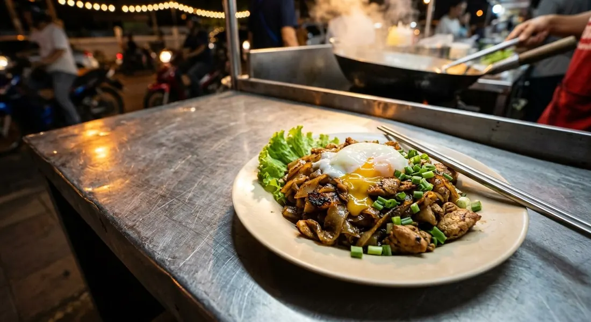

Wide rice noodles fried in lard until the edges char, chicken, tang chai — and the lava egg that steams on top.

ก๋วยเตี๋ยวคั่วไก่ is Yaowarat's noodle — Chinatown Bangkok's answer to pad see ew, and the difference is in the verb. คั่ว means to fry something in a dry pan until it toasts: the wide noodles go into a hot wok with lard and get fried until their edges char and the whole plate smells of the wok. Aroifin's round-up calls the signature out plainly — the faint burnt aroma from the khua is what people get addicted to.
Pim's เยาวราช recipe starts with the marinade — chicken in egg white, fish sauce, sugar and pepper — and fries in three tablespoons of lard, because lard is what carries the wok flavour. Then comes the dish's quiet signature ingredient: ตังฉ่าย, salted pickled cabbage, washed and squeezed dry, fried until fragrant. It's the Cantonese inheritance that makes the dish taste like Chinatown.
And there's the modern flourish Wongnai's version makes explicit: the lava egg. The fried noodles are heaped, a well is pressed into them, an egg is cracked in, and the lid goes on — four minutes of steam later, the yolk is still running and folds through the charred noodles as you eat. Chilli sauce and a wedge of lime at the table, lettuce leaves underneath. That's the whole dish.
| Thai | English | Amount |
|---|---|---|
| Marinade | ||
| อกไก่หั่นชิ้น | Chicken breast, sliced | 200 g |
| ไข่ขาว | Egg white | ½ egg |
| น้ำปลา / น้ำตาลทราย / พริกไทย | Fish sauce / sugar / pepper | 1½ tbsp / 2 tsp / 1 tsp |
| The khua | ||
| เส้นใหญ่ | Wide rice noodles | 300 g |
| หมึกแช่ | Soaked squid, sliced | 80 g |
| น้ำมันหมู | Lard | 3 tbsp |
| ซีอิ๊วขาว / ซอสหอยนางรม | White soy / oyster sauce | 2 tbsp / 2½ tbsp |
| ตังฉ่าย | Tang chai pickled cabbage | 1 tbsp |
| ไข่ไก่ / ต้นหอมซอย | Eggs / spring onion | 2 / 2 tbsp |
| ผักกาดหอม / ซอสพริก | Lettuce / chilli sauce | to serve |
Wongnai's lava-egg version: ½ kg noodles, 200 g tenderloin, 3 eggs, 4 tbsp oyster, 3 tbsp white soy, 1 tbsp dark soy, 1 tbsp sesame oil, 3 tbsp tang chai, 5 garlic cloves — high-fire khua, then the egg steamed under the lid.
Lard or oil. Pim's เยาวราช recipe fries in three tablespoons of lard; Wongnai's home version uses a single spoon of plain oil. The lard is the Chinatown standard — it's the difference between wok-fragrant and merely fried.
The egg: scrambled or lava. Wongnai's signature is the egg cracked into a well and steamed under the lid for four minutes. Pim's eggs go through the dish more conventionally. The lava finish is the modern street-stall style — runny yolk folding into charred noodles.
Squid or not. Pim adds soaked squid to the chicken — the เยาวราช classic pairing. Wongnai's version is chicken only. The squid adds chew and a faint seafood depth.
Chicken cut. Breast (Pim) or tenderloin (Wongnai). Tenderloin stays softer under the high fire; breast needs the marinade's egg white to survive the char.
Dark soy. Wongnai adds a spoon for colour; Pim keeps the plate pale golden with white soy and oyster only. The darker version reads more Cantonese.
This recipe is translated from the following Thai-language sources. Where they disagree, we've said so.
1. Pim's Kitchen (พิม) — "ก๋วยเตี๋ยวคั่วไก่ สูตรเยาวราช" (the recipe used here: lard, squid, tang chai) — pim.in.th
2. Wongnai — "ก๋วยเตี๋ยวคั่วไก่ไข่ลาวา" by GopOpOp (the lava-egg version) — wongnai.com
3. Aroifin — "รวม 5 เมนู ก๋วยเตี๋ยวคั่วไก่ สูตรเด็ด" (the dish overview + variants incl. the mini-cruller version) — aroifin.com